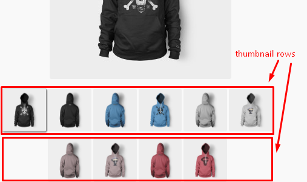

The WooCommerce Product Zoom provides the out-of-box plugin that lets your customers see your products in detail.
You don't need to be familiar with programming.
Let's introduce this!
First, download and put our plugin to the plugins folder of your site.
After you've done this the plugin will appear in the Admin Panel -> Plugins. Just activate it.
And now you can find it in the WooCommerce->Settings->WooCommerce Product Zoom.
Congratulations! Now you have the beatiful zoom gallery on your website!
You can leave it as it is or read below how to customize it.
The general parameters you need to know are Zoom Factor, Zoom Window Width and Height and Zoom Window Position. Let's discuss each of them.
It means how many times your image has to be zoomed. This parameter provides values from 1 to 10. For example, here is 2X zoom at the picture.
The Zoom Window is the appearing area where your zoomed image is. It has its own size, by default it is equals to an original image. But you can easily set this parameter whatever you want.
It is set as consisting of original images. It is complicated to understand at first sight. See the image below.
As you can see a Zoom Window size is how many original image sizes in it. It is made so because in this case it is not cool to use absolute units like a pixels. So, it's a good decision to use an original image size as a base.
The Zoom Window position is based on position of original image: on the right to it, on the left to it, on the top to it, on the bottom to it and overlay the original image.
Here are 4 Zoom Window positions relatively to original image. And the 5th position simply overlay the original image.
There are few parameters that will be nice out-of-box: Zoom Window Border parameters, Zoom Lens Border parameters and Number of Thumbnails per Row.
It is very simple - you can customize a color, thickness and type of line of the Zoom Window Border and Lens Border.
So, the Number of Thumbnails per Row is an easy parameter, just look at the picture below. You see, here are totally 10 images, but each row contains no more than 6 images, because of this parameter set to 6.
And the Plugin Templates Prioprity. Basically, the WooCommerce Product Zoom overrides standard WooCommerce single product image and single product thumbnails templates. This parameter defines do the overrided WooCommerce Product Zoom files have a heigher priority than those one overrided by your theme. By default it is true.
We made a handsome mobile version! You know that a standard gallery not so pretty.
And we provide THE REAL ZOOM. You can move across the zoomed image by tapping it. It is very simple and pretty!